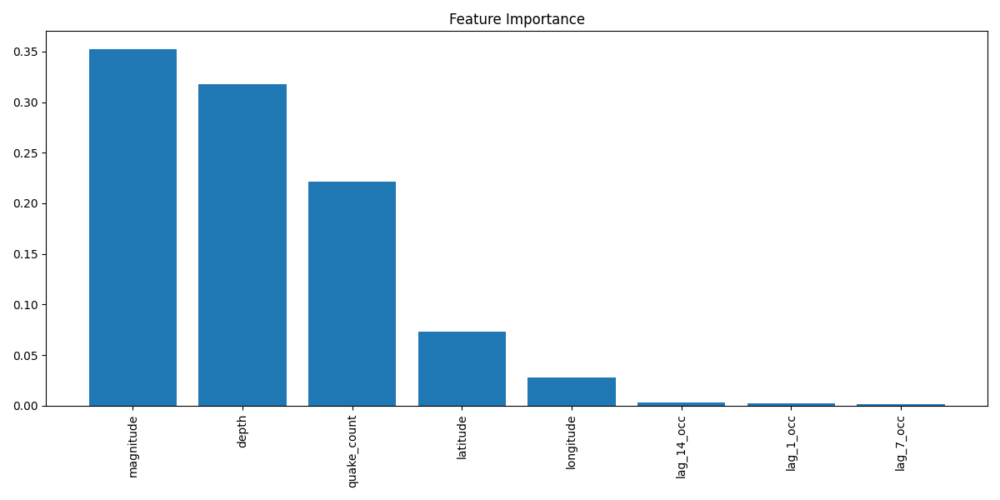

Earthquake Prediction Model

We developed an advanced machine learning model to predict the probability of daily earthquake events using a time-series framework. The model utilizes temporal features (hour, day, month), lagged seismic metrics (1, 7, 14-day intervals), and aggregated historical patterns. It demonstrated exceptional performance with 100% precision, recall, F1-score, and AUC, which suggests strong class separation—though such results may also indicate possible overfitting or feature leakage.

While the model provides accurate predictions, it currently lacks spatial granularity for location-specific forecasting. Additional interpretability is offered through dimensionality reduction (PCA) and feature importance analysis. Notably, key contributors include lagged occurrences, seismic depth, and event magnitude.
Despite strong metrics, uncalibrated probability outputs and binary-only classification restrict practical deployment. Future improvements include spatial feature integration, calibrated probability outputs, and validation on unseen datasets to prevent overfitting.

In summary:
- Extracted temporal features: hour, day, month
- Engineered lag features: 1, 7, 14-day seismic metrics
- Achieved 100% precision/recall/F1/AUC (possible overfitting or leakage)
- Visualizations: PCA, predicted vs. actual, and feature importance
- Limitations: no spatial prediction, uncalibrated outputs, binary-only classification
- Future scope: integrate geospatial data, calibrate probabilities, validate on real-world unseen data
View the source code on GitHub
Back to Projects